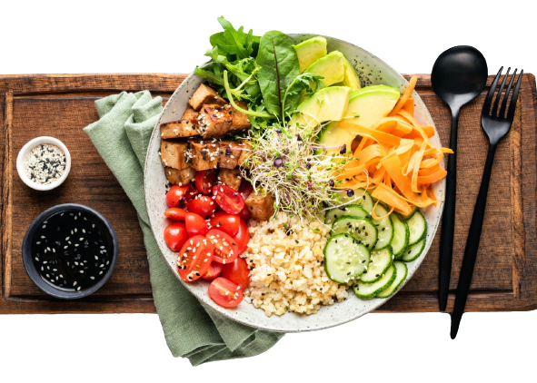

Dieta Vegana
Prós:
- Melhora da saúde cardiovascular.
- Redução do risco de doenças crônicas.
- Sustentabilidade ambiental.
- Motivações éticas relacionadas aos direitos dos animais.
Contras:
- Possibilidade de deficiências nutricionais se não for bem planejada.
- Necessidade de conhecimento nutricional para atender às necessidades.
- Restrição alimentar social.
- Desafios de obtenção de proteína completa.
- Possível custo mais elevado.
- Adaptação pode ser desafiadora para algumas pessoas.

Dieta Vegana
Escolha uma receita no menu abaixo: